Econometría Aplicada. Lección 6
Table of Contents
- 4.1. Procesos lineales causales
- 4.2. Proceso de Ruido Blanco
- 4.3. Proceso de media móvil MA(\(q\))
- 4.4. Proceso de media móvil MA(\(1\))
- 4.5. Proceso de media móvil MA(\(2\))
- 4.5.1. MA(2) con \(\theta_1>0\) y \(\theta_2>0\)
- 4.5.2. MA(2) con \(\theta_1<0\) y \(\theta_2<0\)
- 4.5.3. MA(2) con \(\theta_1>0\) y \(\theta_2<0\)
- 4.5.4. MA(2) con \(\theta_1<0\) y \(\theta_2>0\)
- 4.5.5. MA(2) con dos raíces reales, una positiva y la otra negativa
- 4.5.6. MA(2) con un par de raíces complejas
- 4.5.7. MA(2) con dos raíces reales y negativas
- 4.5.8. MA(2) con dos raíces reales y positivas
- 4.6. Proceso autorregresivo AR(\(p\))
- 4.7. Proceso autorregresivo AR(\(1\))
- 4.8. Proceso autorregresivo AR(\(2\))
- 4.8.1. AR(2) con \(\phi_1>0\) y \(\phi_2>0\)
- 4.8.2. AR(2) con \(\phi_1<0\) y \(\phi_2<0\)
- 4.8.3. AR(2) con \(\phi_1>0\) y \(\phi_2<0\)
- 4.8.4. AR(2) con \(\phi_1<0\) y \(\phi_2>0\)
- 4.8.5. AR(2) con dos raíces reales, una positiva y la otra negativa
- 4.8.6. AR(2) con un par de raíces complejas
- 4.8.7. AR(2) con dos raíces reales y negativas
- 4.8.8. AR(2) con dos raíces reales y positivas
En esta lección veremos tres funciones que describen las características correspondientes a los momentos de segundo orden de los procesos lineales: la función de autocorrelación (ACF), la función de autocorrelación parcial (PACF) y la densidad espectral (estas tres funciones son transformaciones de la función de autocovarianzas del proceso). Veremos la estructura de estas funciones en procesos lineales genéricos y luego particularizaremos a procesos de ruido blanco, procesos MA y procesos AR.
Carga de algunas librerías de R
Primero cargamos la librería tfarima (Repositorio Cran:
https://cran.r-project.org/web/packages/tfarima/index.html;
repositorio GitHub: https://github.com/gallegoj/tfarima)
library(tfarima) # librería de José Luis Gallego para Time Series library(readr) # para leer ficheros CSV library(ggplot2) # para el scatterplot (alternaticamente library(tidyverse)) library(ggfortify) # para pintar series temporales library(jtools) # para representación resultados estimación library(zoo) # para generar objetos ts (time series)
y además fijamos los parámetros por defecto para las figuras en png
del notebook
# fijamos el tamaño de las figuras que se generan en el notebook options(repr.plot.width = 12, repr.plot.height = 4, repr.plot.res = 200)
1. Función de autocovarianzas y función de autocorrelación (ACF)
Ya hemos visto que si un proceso estocásticos es estacionario, la covarianza entre \(X_t\) y \(X_{t+k}\) no depende de \(t\); tan solo depende de la distancia temporal \(k\) entre ambas variables y que
- La secuencia \(\boldsymbol{\gamma}=(\gamma_k\mid k\in\mathbb{Z})\) se denomina función de autocovarianzas
La secuencia \(\boldsymbol{\rho}=(\rho_k\mid k\in\mathbb{Z})\) donde \[\rho_k=\frac{Cov(X_t,X_{t-k})}{\sqrt{Var(X_t)Var(X_{t-k})}}=\frac{\gamma_k}{\gamma_0} \]
se denomina función de autocorrelación (ACF).
Veamos una nueva transformación de \(\boldsymbol{\gamma}\) que subraya otras características de interdependencia temporal en un proceso estocástico.
2. Función de autocorrelación parcial (PACF)
La correlación parcial entre dos variables \(X_t\) y \(X_{t-k}\) de un proceso estacionario \(\boldsymbol{X}\) mide su correlación una vez descontado el efecto de las variables \(X_{t-1},\ldots X_{t-(k-1)}\) que median entre ambas. \[X_t,\ \overbrace{X_{t-1},\ldots X_{t-(k-1)},}\ X_{t-k}\]
Si denotamos con \(\widehat{X_t}\) y \(\widetilde{X_{t-k}}\) los ajustes de las respectivas regresiones de \(X_t\) y \(X_{t-k}\) sobre \(X_{t-1},\ldots X_{t-(k-1)};\;\) la correlación parcial \(\pi_k\) entre \(X_t\) y \(X_{t+k}\) es la correlación entre los residuos de sendas regresiones: \[\pi_k=Corr\Big((X_t-\widehat{X_t}),\ (X_{t-k}-\widetilde{X_{t-k}})\Big)\]
En un proceso débilmente estacionario las correlaciones parciales solo dependen de la distancia \(k\), lo que permite definir la siguiente secuencia.
Función de autocorrelación parcial (PACF) de un proceso estacionario \(\boldsymbol{X}\) es la siguiente secuencia \(\boldsymbol{\pi}=(\pi_k\mid k\in\mathbb{Z}),\;\) que es simétrica pues \(\pi_{-k}=\pi_k\): \[\begin{cases} \pi_0 & = \rho_0 ={\color{blue}{1}}\\\\ \pi_1 &=Corr(X_t,\ X_{t-1})=\rho_1=\frac{\gamma_1}{\gamma_0}\\\\ \pi_k &=Corr\Big((X_t-\widehat{X_t}),\ (X_{t-k}-\widetilde{X_{t-k}})\Big) \end{cases},\] donde \(\widehat{X_t}\) y \(\widetilde{X_{t-k}}\) son los ajustes de las respectivas regresiones de \(X_t\) y \(X_{t-k}\) sobre \(X_{t-1},\ldots X_{t-(k-1)}.\;\) i.e., las proyecciones ortogonales sobre \(\bar{sp}(1,X_{t-1}:X_{t-(k-1)})\).
La magnitud de la correlación parcial \(\;\pi_k\;\) refleja la mejora en la predicción de \(\widehat{X_t}\) si en lugar de usar una combinación lineal con solo los \(k-1\) primeros retardos, \(\widehat{X_t}=\widehat{\alpha_0}+\sum_{j=1}^{k-1}\widehat{\alpha_j} X_{t-j}\), empleamos \(k\) retardos (i.e., un retardo más).
(Dicha propiedad nos ayudará a elegir el orden de procesos autoregresivos).
Hay una correspondencia uno-a-uno entre la función de autocovarianzas \(\boldsymbol{\gamma}\) y la PACF \(\boldsymbol{\pi}\).
Es decir, es posible reconstruir una de las secuencias a partir de la otra (por ejemplo resolviendo la ecuaciones de Yule-Walker recursivamente con el algoritmo Levinson-Durbin; véase Pourahmadi, M. (2001, Capítulo 7) o Brockwell & Davis (1991, Capitulo 5))
Consecuentemente, la PACF \(\boldsymbol{\pi}\) puede verse como una reparametrización de la función de autocovarianzas \(\boldsymbol{\gamma}\).
Veamos otra transformación de \(\boldsymbol{\gamma}\) que también arrojará luz sobre las propiedades de un proceso estocástico.
3. Densidad espectral
Si \(\boldsymbol{X}\) es un proceso estocástico con función de autocovarianzas \(\boldsymbol{\gamma}\in\ell^1\), es decir, con función de autocovarianzas absolutamente sumable, \[\sum_{h\in\mathbb{Z}}|\gamma_h|<\infty,\] entonces definimos la densidad espectral de \(\boldsymbol{X}\) como \[f(\omega) \quad=\quad\frac{1}{2\pi}\sum_{h\in\mathbb{Z}}\gamma_h e^{-i h\omega} \quad=\quad\frac{1}{2\pi}\sum_{h\geq0}\gamma_h \cos(h\omega),\qquad \omega\in[-\pi,\pi].\]
La densidad espectral \(f(\omega)\) satisface las siguientes propiedades:
- \(f(\omega)=f(-\omega)\)
- \(f(\omega)\geq0\)
- \(\int_{-\pi}^\pi f(\omega)d\omega<\infty\)
Es más, partiendo de la densidad espectral se pueden calcular las covarianzas \[\gamma_h=\int_{-\pi}^\pi f(\omega)e^{-i h\omega}d\omega;\quad h\in\mathbb{Z}\]
Consecuentemente, para \(h=0\) \[\sigma^2=\gamma_0=\int_{-\pi}^\pi f(\omega)d\omega.\]
Por tanto podemos interpretar la densidad espectral como una descomposición de la varianza oscilaciones de distintas frecuencias.
La ACF, la PACF y la densidad espectral son funciones que dependen únicamente de los dos primeros momentos de la distribución.
Su estimación y posterior análisis son la herramienta fundamental para elegir un modelo ARMA para una serie temporal ``estacionaria''.
Para entenderlo debemos ver cómo son estas funciones en algunos modelos lineales concretos.
4. ACF, PACF y densidad espectral de algunos modelos lineales
4.1. Procesos lineales causales
Sea el proceso \(\boldsymbol{X}=\boldsymbol{\psi}*\boldsymbol{U}\), donde \(\;\boldsymbol{U}\sim WN(0,\sigma^2)\;\) y \(\;\boldsymbol{\psi}\in\ell^2\;\) es una serie formal: \[X_t=\sum_{j\geq0}\psi_j U_{t-j}.\] Por la lección anterior sabemos que \(\;E(X_t)=0\;\) y que
- \(\boldsymbol{\gamma} \;=\; \sigma^2 \boldsymbol{\psi}(z)*\boldsymbol{\psi}(z^{-1})\)
Es decir, \[\gamma_k = \sigma^2\sum_{j=0}^\infty \psi_{j+|k|}\cdot\psi_j.\] Por otra parte, \(\;\gamma_k\to0\;\) cuando \(\;k\to\infty\)
A partir de \(\boldsymbol{\gamma}\) obtenemos las otras tres funciones:
ACF: \(\;\boldsymbol{\rho} \;=\; \frac{1}{\gamma_0}\boldsymbol{\gamma}\)
Dens. espectral: \(\;f(\omega)=\frac{1}{2\pi}\sum_{h\geq0}\gamma_h\cos(h\omega)\)
PACF: \(\;\boldsymbol{\pi}\in\ell^2,\quad\) i.e., \(\;\pi_k\to0\;\) cuando \(\;k\to\infty\)
4.2. Proceso de Ruido Blanco
Sea \(\boldsymbol{X}=1*\boldsymbol{U}\), donde \(\;\boldsymbol{U}\sim WN(0,\sigma^2)\;;\) es decir \(X_t=U_t\) para \(t\in\mathbb{Z}\). Entonces
- \(\boldsymbol{\gamma} \;=\; \sigma^2 (1z^0*1z^{0}) \;=\; \sigma^2z^0 \;=\; (\ldots,0,0,{\color{blue}{\sigma^2}},0,0,\ldots)\)
- \(\boldsymbol{\rho} \;=\; \frac{1}{\gamma_0}\boldsymbol{\gamma} \;=\; \frac{1}{\sigma^2}\boldsymbol{\gamma} \;=\; 1 z^0 \;=\; (\ldots,0,0,{\color{blue}{1}},0,0,\ldots)\)
- \(f(\omega) \;=\; \frac{1}{2\pi}\sum_{h\geq0}\gamma_h \cos(h\omega) \;=\; \frac{\sigma^2}{2\pi} \cos(0\omega) \;=\; \frac{\sigma^2}{2\pi};\quad \omega\in[-\pi,\pi]\)
- \(\boldsymbol{\pi} \;=\; 1 z^0 \;=\; (\ldots,0,0,{\color{blue}{1}},0,0,\ldots)\)
options(repr.plot.width = 12, repr.plot.height = 2, repr.plot.res = 200) wn <- um(ar = "(1 - 0B)") display(list(wn), lag.max = 20, byrow = TRUE)
options(repr.plot.width = 12, repr.plot.height = 5, repr.plot.res = 200) ide(sim(wn, n = 400), lag.max = 20, graphs = c("plot", "acf", "pacf", "pgram"), main="Ruido blanco")

4.3. Proceso de media móvil MA(\(q\))
Sea \(\boldsymbol{X}=\boldsymbol{\theta}*\boldsymbol{U}\), con \(\;\boldsymbol{U}\sim WN(0,\sigma^2)\;\) y donde \(\boldsymbol{\theta}\) es un polinomio de orden \(q>0\), con \(\theta_0=1\) y con todas sus raíces fuera del círculo unidad \((\boldsymbol{\theta}^{-\triangleright}\in\ell^1)\), es decir \[X_t= \sum_{j=1}^q\theta_j U_{t-j}+U_t.\]
Entonces \(E(X_t)=0\) y
\(\boldsymbol{\gamma} \;=\; \sigma^2 \boldsymbol{\theta}(z)*\boldsymbol{\theta}(z^{-1}) \;=\; \sigma^2 \sum\limits_{j,k=0}^q \theta_{j+k}\theta_{j} z^{j}\;\) (grado \(q\) y cogrado \(-q\))
\(\boldsymbol{\rho} \;=\; \frac{1}{\gamma_0}\boldsymbol{\gamma}\)
\(f(\omega) \;=\; \frac{\sigma^2}{2\pi}\boldsymbol{\theta}(e^{-i\omega})\cdot\boldsymbol{\theta}(e^{i\omega}) \;=\; \frac{1}{2\pi}\sum\limits_{h=0}^q \gamma_h \cos(h\omega);\quad \omega\in[-\pi,\pi]\quad\) (\(q\) cosenos \(+1\))
\(\boldsymbol{\pi}\;\) tiene grado \(\infty\) y cogrado \(-\infty\;\) y su magnitud decae paulatinamente cuando \(\;k\to\infty\)
4.4. Proceso de media móvil MA(\(1\))
Sea \(\boldsymbol{X}=(1-\theta z)*\boldsymbol{U}\) con \(|\theta|<1\) y con \(\;\boldsymbol{U}\sim WN(0,\sigma^2)\;\), es decir \[X_t=U_t-\theta U_{t-1}.\]
- \(\boldsymbol{\gamma} \;=\; \sigma^2 (1-\theta z)*(1-\theta z^{-1}) \;=\; \sigma^2 (\ldots,\ 0\ ,\ -\theta,\ {\color{blue}{(1+\theta^2)}},\ -\theta,\ 0,\ \ldots)\)
- \(\boldsymbol{\rho} \;=\; \frac{1}{\gamma_0}\boldsymbol{\gamma} \;=\; \frac{1}{\sigma^2(1+\theta^2)}\boldsymbol{\gamma}\)
- \(f(\omega) \;=\; \frac{\sigma^2}{2\pi}\boldsymbol{\theta}(e^{-i\omega})\cdot\boldsymbol{\theta}(e^{i\omega}) \;=\; \frac{\sigma^2}{2\pi}\Big((1+\theta^2)\;-\;2\theta\cos(\omega)\Big);\quad \omega\in[-\pi,\pi]\)
- \(\boldsymbol{\pi} \;=\; \sum\limits_{k\in\mathbb{Z}}{ \frac{-\theta^k(1-\theta^2)}{1-\theta^{2(k+1)}} z^k}\)
4.4.1. MA(1) con raíz positiva
options(repr.plot.width = 12, repr.plot.height = 2, repr.plot.res = 200) ma1p <- um(ma = "(1 - 0.9B)") display(list(ma1p), lag.max = 20, byrow = TRUE)
\[\boldsymbol{\theta}(z)=1-0.9z\quad\Rightarrow\quad X_t= (1-0.9 \mathsf{B})U_t\qquad {\color{blue}{(\theta>0)}}\]
roots(ma1p)
Real Imaginary Modulus Frequency Period Mult. 1.111111 0 1.111111 0 Inf 1
options(repr.plot.width = 12, repr.plot.height = 5, repr.plot.res = 200) ide(sim(ma1p, n = 400), lag.max = 20, graphs = c("plot", "acf", "pacf", "pgram"))
4.4.2. MA(1) con raíz negativa
options(repr.plot.width = 12, repr.plot.height = 2, repr.plot.res = 200) ma1n <- um(ma = "(1 + 0.9B)") display(list(ma1n), lag.max = 20, byrow = TRUE)
\[\boldsymbol{\theta}(z)=1+0.9z\quad\Rightarrow\quad X_t= (1+0.9 \mathsf{B})U_t\qquad {\color{blue}{(\theta<0)}}\]

roots(ma1n)
Real Imaginary Modulus Frequency Period Mult. -1.111111 0 1.111111 0.5 2 1
options(repr.plot.width = 12, repr.plot.height = 5, repr.plot.res = 200) ide(sim(ma1n, n = 400), lag.max = 20, graphs = c("plot", "acf", "pacf", "pgram"))
4.5. Proceso de media móvil MA(\(2\))
Sea \(\boldsymbol{X}=(1-\theta_1 z-\theta_2 z^2)*\boldsymbol{U}\), con \(\;\boldsymbol{U}\sim WN(0,\sigma^2)\;\) y con \[\theta_1+\theta_2<1;\qquad \theta_2-\theta_1<1;\qquad |\theta_2|<1;\quad \text{(i.e., invertible)}\] es decir \(X_t=U_t-\theta_1 U_{t-1}-\theta_2 U_{t-2}\).
\(\boldsymbol{\gamma} \;=\; \sigma^2 (1-\theta_1 z-\theta_2 z^2)*(1-\theta_1 z^{-1}-\theta_2 z^{-2})\)
\(\gamma_0={\color{blue}{\sigma^2(1+\theta_1^2+\theta_2^2)}};\qquad\) \(\gamma_1=\sigma^2\big(-\theta_1(1-\theta_2)\big);\qquad\) \(\gamma_2=\sigma^2(-\theta_2)\)
\(\gamma_3=\gamma_4=\cdots=0\qquad\) (y es simétrica)
- \(\boldsymbol{\rho} \;=\; \frac{1}{\gamma_0}\boldsymbol{\gamma} \;=\; \frac{1}{\sigma^2(1+\theta_1^2+\theta_2^2)}\boldsymbol{\gamma}\)
- \(f(\omega) \;=\; \frac{\sigma^2}{2\pi}\Big((1+\theta_1^2+\theta_2^2)\;-\;2\theta_1(1+\theta_2)\cos(\omega)\;-\;2\theta_2\cos(2\omega)\Big)\)
- \(\boldsymbol{\pi}\) tiene una expresión complicada, pero su magnitud decae paulatinamente.
4.5.1. MA(2) con \(\theta_1>0\) y \(\theta_2>0\)
options(repr.plot.width = 12, repr.plot.height = 2, repr.plot.res = 200) ma2thpp <- um(ma = "(1 -0.6B - 0.3B^2)") display(list(ma2thpp), lag.max = 20, byrow = TRUE)
\[\boldsymbol{\theta}(z)=1-0.6z -0.3z^2\quad\Rightarrow\quad X_t= (1-0.6\mathsf{B}-0.3\mathsf{B}^2)U_t \qquad {\color{blue}{(\theta_1>0 \;\text{y}\; \theta_2>0)}}\]
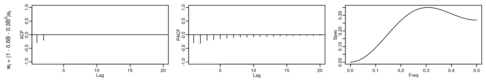
roots(ma2thpp)
Real Imaginary Modulus Frequency Period Mult. 1.081666 -8.077936e-28 1.081666 0.0 Inf 1 -3.081666 8.077936e-28 3.081666 0.5 2 1
options(repr.plot.width = 12, repr.plot.height = 5, repr.plot.res = 200) ide(sim(ma2thpp, n = 400), lag.max = 20, graphs = c("plot", "acf", "pacf", "pgram"))
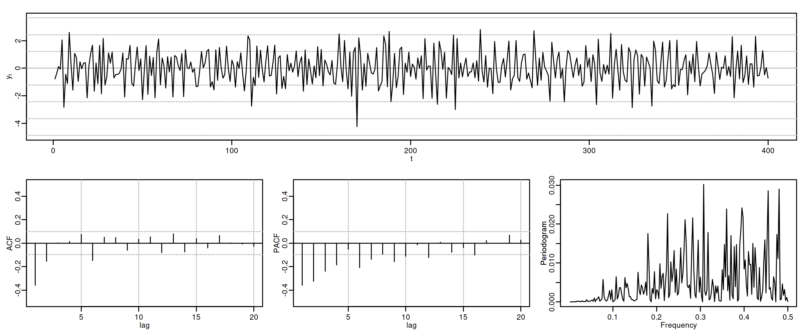
4.5.2. MA(2) con \(\theta_1<0\) y \(\theta_2<0\)
options(repr.plot.width = 12, repr.plot.height = 2, repr.plot.res = 200) ma2thnn <- um(ma = "(1 +0.9B + 0.9B^2)") display(list(ma2thnn), lag.max = 20, byrow = TRUE)
\[\boldsymbol{\theta}(z)=1+0.9z+0.9z^2\quad\Rightarrow\quad X_t= (1+0.9\mathsf{B}+0.9\mathsf{B}^2)U_t \qquad {\color{blue}{(\theta_1<0 \;\text{y}\; \theta_2<0)}}\]
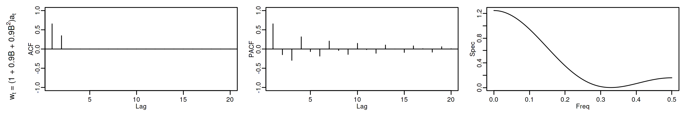
roots(ma2thnn)
Real Imaginary Modulus Frequency Period Mult. -0.5 0.9279607 1.054093 0.3286569 3.042687 1 -0.5 -0.9279607 1.054093 0.3286569 3.042687 1
options(repr.plot.width = 12, repr.plot.height = 5, repr.plot.res = 200) ide(sim(ma2thnn, n = 400), lag.max = 20, graphs = c("plot", "acf", "pacf", "pgram"))
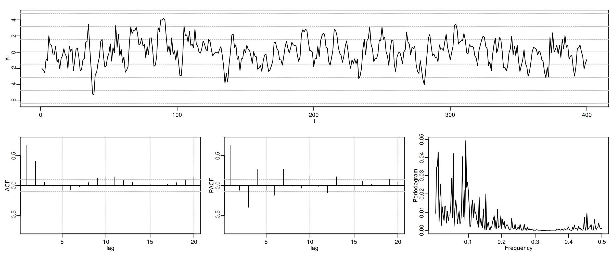
4.5.3. MA(2) con \(\theta_1>0\) y \(\theta_2<0\)
options(repr.plot.width = 12, repr.plot.height = 2, repr.plot.res = 200) ma2thpn <- um(ma = "(1 -1.1B + 0.9B^2)") display(list(ma2thpn), lag.max = 20, byrow = TRUE)
\[\boldsymbol{\theta}(z)=1-1.1z +0.9z^2\quad\Rightarrow\quad X_t= (1-1.1\mathsf{B}+0.9\mathsf{B}^2)U_t \qquad {\color{blue}{(\theta_1>0 \;\text{y}\; \theta_2<0)}}\]
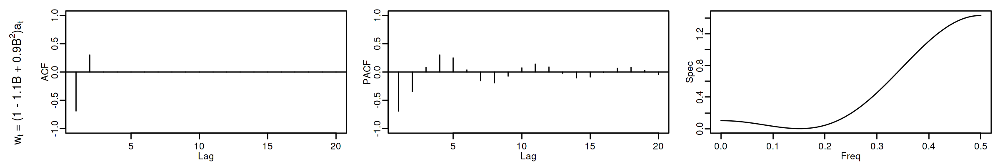
roots(ma2thpn)
Real Imaginary Modulus Frequency Period Mult. 0.6111111 0.858868 1.054093 0.1515749 6.597397 1 0.6111111 -0.858868 1.054093 0.1515749 6.597397 1
options(repr.plot.width = 12, repr.plot.height = 5, repr.plot.res = 200) ide(sim(ma2thpn, n = 400), lag.max = 20, graphs = c("plot", "acf", "pacf", "pgram"))
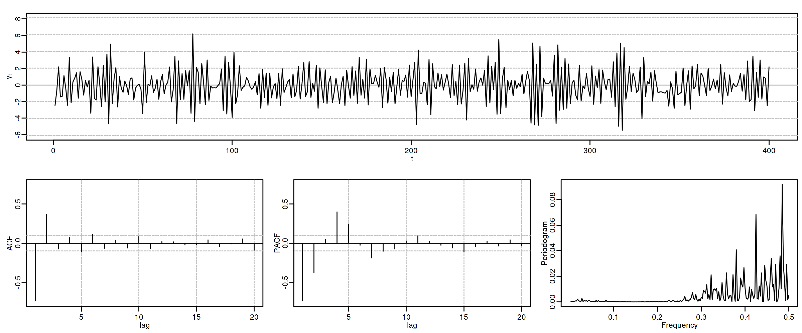
4.5.4. MA(2) con \(\theta_1<0\) y \(\theta_2>0\)
options(repr.plot.width = 12, repr.plot.height = 2, repr.plot.res = 200) ma2thnp <- um(ma = "(1 +0.6B - 0.3B^2)") display(list(ma2thnp), lag.max = 20, byrow = TRUE)
\[\boldsymbol{\theta}(z)=1+0.6z-0.3z^2\quad\Rightarrow\quad X_t= (1+0.6\mathsf{B}-0.3\mathsf{B}^2)U_t \qquad {\color{blue}{(\theta_1<0 \;\text{y}\; \theta_2>0)}}\]
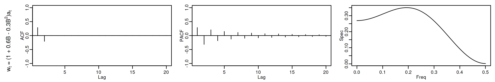
roots(ma2thnp)
Real Imaginary Modulus Frequency Period Mult. 3.081666 3.831501e-21 3.081666 0.0 Inf 1 -1.081666 -3.831501e-21 1.081666 0.5 2 1
options(repr.plot.width = 12, repr.plot.height = 5, repr.plot.res = 200) ide(sim(ma2thnp, n = 400), lag.max = 20, graphs = c("plot", "acf", "pacf", "pgram"))
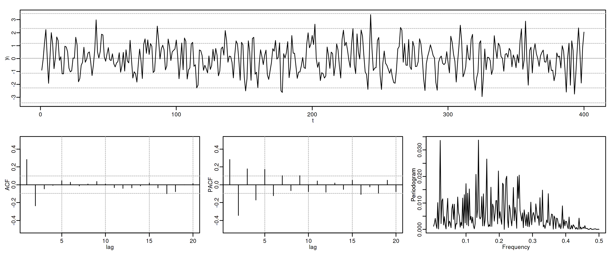
4.5.5. MA(2) con dos raíces reales, una positiva y la otra negativa
options(repr.plot.width = 12, repr.plot.height = 2, repr.plot.res = 200) ma2pn <- um(ma = "(1 - 0.64B^2)") display(list(ma2pn), lag.max = 20, byrow = TRUE)
\[\boldsymbol{\theta}(z)=1-0.64z^2\quad\Rightarrow\quad X_t= (1-0.64\mathsf{B}^2)U_t \qquad {\color{blue}{(\text{raices reales: +, -})}}\]
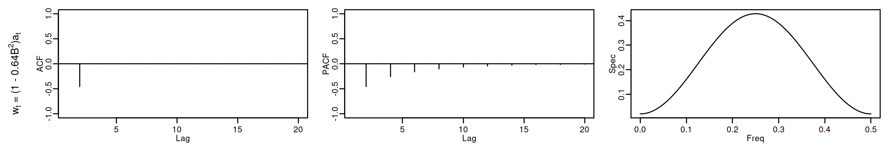
roots(ma2pn)
Real Imaginary Modulus Frequency Period Mult. 1.25 0 1.25 0.0 Inf 1 -1.25 0 1.25 0.5 2 1
options(repr.plot.width = 12, repr.plot.height = 5, repr.plot.res = 200) ide(sim(ma2pn, n = 400), lag.max = 20, graphs = c("plot", "acf", "pacf", "pgram"))
4.5.6. MA(2) con un par de raíces complejas
options(repr.plot.width = 12, repr.plot.height = 2, repr.plot.res = 200) ma2np <- um(ma = "(1 + 0.64B^2)") display(list(ma2np), lag.max = 20, byrow = TRUE)
\[\boldsymbol{\theta}(z)=1+0.64z^2\quad\Rightarrow\quad X_t= (1+0.64\mathsf{B}^2)U_t \qquad {\color{blue}{(\text{par de raices complejas})}}\]
roots(ma2np)
Real Imaginary Modulus Frequency Period Mult. 0 1.25 1.25 0.25 4 1 0 -1.25 1.25 0.25 4 1
options(repr.plot.width = 12, repr.plot.height = 5, repr.plot.res = 200) ide(sim(ma2np, n = 400), lag.max = 20, graphs = c("plot", "acf", "pacf", "pgram"))
4.5.7. MA(2) con dos raíces reales y negativas
options(repr.plot.width = 12, repr.plot.height = 2, repr.plot.res = 200) ma2rojo <- um(ma = "(1 + 1.6B + .64B^2 )") display(list(ma2rojo), lag.max = 20, byrow = TRUE)
\[\boldsymbol{\theta}(z)=1+1.6z+0.64z^2\quad\Rightarrow\quad X_t= (1+1.6\mathsf{B}+0.64\mathsf{B}^2)U_t \qquad {\color{blue}{(\text{r. reales: -, -})}}\]
roots(ma2rojo)
Real Imaginary Modulus Frequency Period Mult. -1.25 -1.110223e-16 1.25 0.5 2 2
options(repr.plot.width = 12, repr.plot.height = 5, repr.plot.res = 200) ide(sim(ma2rojo, n = 400), lag.max = 20, graphs = c("plot", "acf", "pacf", "pgram"))
4.5.8. MA(2) con dos raíces reales y positivas
options(repr.plot.width = 12, repr.plot.height = 2, repr.plot.res = 200) ma2violeta <- um(ma = "(1 - 1.6B + .64B^2 )") display(list(ma2violeta), lag.max = 20, byrow = TRUE)
\[\boldsymbol{\theta}(z)=1-1.6z+0.64z^2\quad\Rightarrow\quad X_t= (1-1.6\mathsf{B}+0.64\mathsf{B}^2)U_t \qquad {\color{blue}{(\text{r. reales: +, +})}}\]
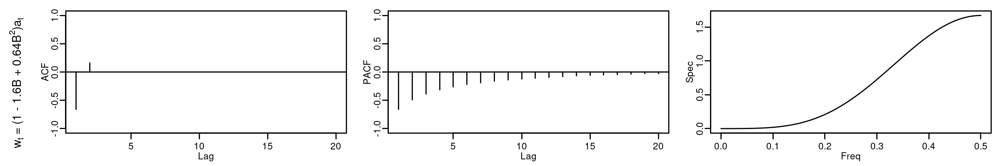
roots(ma2violeta)
Real Imaginary Modulus Frequency Period Mult. 1.25 -2.775558e-16 1.25 0 Inf 2
options(repr.plot.width = 12, repr.plot.height = 5, repr.plot.res = 200) ide(sim(ma2violeta, n = 400), lag.max = 20, graphs = c("plot", "acf", "pacf", "pgram"))
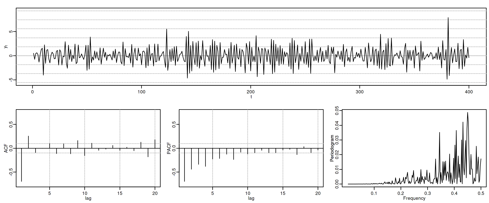
4.6. Proceso autorregresivo AR(\(p\))
Sea \(\boldsymbol{\phi}*\boldsymbol{X}=\boldsymbol{U}\), con \(\;\boldsymbol{U}\sim WN(0,\sigma^2)\;\) y donde \(\boldsymbol{\phi}\) es un polinomio de grado \(p>0\) con \(\phi_0=1\). Entonces \[(\boldsymbol{\phi}*\boldsymbol{X})_t=\boldsymbol{\phi}(\mathsf{B})X_t= (1+\phi_1\mathsf{B}+\phi_2\mathsf{B}^2+\cdots+\phi_p\mathsf{B}^p)X_t= U_t\] Y por tanto \[X_t= U_t-\sum_{j=1}^p\phi_j X_{t-j}.\]
Si todas las raíces del polinomio \(\boldsymbol{\phi}\) (de grado \(p\)) están fuera del círculo unidad, es decir, si el polinomio AR es ``invertible'' \(\;(\boldsymbol{\phi}^{-\triangleright}=\boldsymbol{\phi}^{-1}\in\ell^1)\;\) entonces \(\boldsymbol{X}\) tiene una representación como proceso lineal causal MA(\(\infty\)): \[\boldsymbol{\phi}*\boldsymbol{X}=\boldsymbol{U} \quad\Rightarrow\quad \boldsymbol{X}=\frac{1}{\boldsymbol{\phi}}*\boldsymbol{U} \quad\Rightarrow\quad X_t = U_t + \sum_{j=1}^\infty\psi_j U_{t-j};\] donde \(\;\boldsymbol{\phi}^{-1}=\boldsymbol{\psi}=({\color{blue}1},\ \psi_1,\ \psi_2,\ \psi_3,\ldots)\;\) tiene grado \(\infty\).
Por tanto \(E(X_t)=0\) para todo \(t\in\mathbb{Z}\) y
\(\boldsymbol{\gamma} \;=\; \sigma^2 \frac{1}{\boldsymbol{\phi}(z)}*\frac{1}{\boldsymbol{\phi}(z^{-1})} \;=\; \sigma^2 \sum\limits_{j,k=0}^\infty \psi_{j+k}\psi_j z^{j}\quad\) (grado \(\infty\) y cogrado \(-\infty\))
\(\boldsymbol{\rho} \;=\; \frac{1}{\gamma_0}\boldsymbol{\gamma}\)
\(f(\omega) = \frac{\sigma^2}{2\pi}\frac{1}{\boldsymbol{\phi}(e^{-i\omega})\cdot\boldsymbol{\phi}(e^{i\omega})} \;=\; \frac{1}{2\pi}\sum\limits_{h=0}^\infty \gamma_h \cos(h\omega);\quad\) donde \(\omega\in[-\pi,\pi]\).
(suma infinita de cosenos)
Pero la PACF, \(\;\boldsymbol{\pi},\;\) es una secuencia con grado \(p\) y cogrado \(-p\) (demo en los apuntes).
4.6.1. Demostración de que la PACF tiene cogrado \(-p\) y grado \(p\)
- Sea \(\boldsymbol{X}\) un proceso causal AR(\(p\)): \(\quad X_t\;=\;\sum\limits_{j=1}^p\phi_j X_{t-j}+U_t\)
- La proyección de \(X_{k+1}\) sobre el espacio \(\bar{sp}(X_{2}:X_k)\) generado por \(X_2,\ldots X_k\) (con \(k>p\)) es: \[\widehat{X_{k+1}}=P_{\bar{sp}(X_{2}:X_k)}(X_{k+1})=\sum_{j=1}^p\phi_j X_{k+1-j}\]
- De su representación MA(\(\infty\)): \(\;Y\in\bar{sp}(X_{2}:X_k) \;\Rightarrow\; Y\in\bar{sp}(U_j\mid{j\leq k})\), pues \[X_t\;=\;\sum\limits_{j=0}^{\infty} \psi_j U_{t-j} \quad\Rightarrow\quad \bar{sp}(X_{2}:X_k)\subset\bar{sp}(U_j\mid{j\leq k}) \; \perp \; U_{k+1}\]
- Si \(Y\in\bar{sp}(X_{2}:X_k)\) entonces \(Cov\Big((X_{k+1}-\widehat{X_{k+1}}), Y\Big)=Cov(U_{k+1}, Y)=0\)
- Denotemos con \(\widetilde{X_{1}}\) a la proyección \(P_{\bar{sp}(X_{2}:X_k)}(X_{1})\) de \(X_1\) sobre \(\bar{sp}(X_{2}:X_k)\)
Ahora es fácil ver que \(\pi_k=0\) para \(k>p\), pues
\begin{eqnarray*} \pi_k = & Corr\Big((X_{k+1}-\widehat{X_{k+1}}),(X_{1}-\widetilde{X_{1}})\Big)\\ = & Corr\Big(U_{k+1},(X_{1}-\widetilde{X_{1}})\Big) \; = \; 0 \end{eqnarray*}ya que \(U_{k+1}\perp(X_{1}-\widetilde{X_{1}}) \in \bar{sp}(U_j\mid{j\leq k})\).
4.7. Proceso autorregresivo AR(\(1\))
Sea \(\;(1-\phi z)*\boldsymbol{X}=\boldsymbol{U},\quad\) con \(\;|\phi|<1\;\) y con \(\;\;\boldsymbol{U}\sim WN(0,\sigma^2)\;\), es decir \[X_t=\phi X_{t-1} + U_t.\]
como \(\;\boldsymbol{X}=(1-\phi z)^{-1}*\boldsymbol{U},\quad\) tenemos que
\(\boldsymbol{\gamma} \;=\; \sigma^2 (1-\phi z)^{-1}*(1-\phi z^{-1})^{-1} \;=\; \frac{\sigma^2}{1-\phi^2} \sum\limits_{k=-\infty}^\infty \phi^{|k|} z^k\qquad\) grado \(\infty\) y cogrado \(-\infty\)
\(\boldsymbol{\rho} \;=\; \frac{1}{\gamma_0}\boldsymbol{\gamma} \;=\; \frac{1+\phi^2}{\sigma^2}\boldsymbol{\gamma} \;=\; \sum\limits_{j=-\infty}^\infty \phi^{|j|} z^j \quad\Rightarrow\quad \rho_k=\phi^k\) para \(k\geq0\).
\(f(\omega) \;=\; \frac{1}{2\pi}\sum\limits_{h=0}^\infty \gamma_h \cos(h\omega)=\frac{\sigma^2}{2\pi}\frac{1}{1+\phi^2-2\phi\cos(\omega)}\;\) (compárese con MA(\(1\))).
\(\boldsymbol{\pi} \;=\; (\ldots,\; 0,\; 0,\; \phi,\; {\color{blue}1},\; \phi,\; 0,\; 0,\;\ldots)\qquad\) grado \(1\) y cogrado \(-1\)
4.7.1. AR(1) con raíz positiva
options(repr.plot.width = 12, repr.plot.height = 2, repr.plot.res = 200) ar1p <- um(ar = "(1 - 0.9B)") display(list(ar1p), lag.max = 20, byrow = TRUE)
\[\boldsymbol{\phi}(z)=1-0.9z\quad\Rightarrow\quad X_t=0.9X_{t-1}+U_t\qquad {\color{blue}{(\phi>0)}}\]
roots(ar1p)
Real Imaginary Modulus Frequency Period Mult. 1.111111 0 1.111111 0 Inf 1
options(repr.plot.width = 12, repr.plot.height = 5, repr.plot.res = 200) ide(sim(ar1p, n = 400), lag.max = 20, graphs = c("plot", "acf", "pacf", "pgram"))
4.7.2. AR(1) con raíz negativa
options(repr.plot.width = 12, repr.plot.height = 2, repr.plot.res = 200) ar1n <- um(ar = "(1 + 0.9B)") display(list(ar1n), lag.max = 20, byrow = TRUE)
\[\boldsymbol{\phi}(z)=1+0.9z\quad\Rightarrow\quad X_t=-0.9X_{t-1}+U_t\qquad {\color{blue}{(\phi<0)}}\]
roots(ar1n)
Real Imaginary Modulus Frequency Period Mult. -1.111111 0 1.111111 0.5 2 1
options(repr.plot.width = 12, repr.plot.height = 5, repr.plot.res = 200) ide(sim(ar1n, n = 400), lag.max = 20, graphs = c("plot", "acf", "pacf", "pgram"))
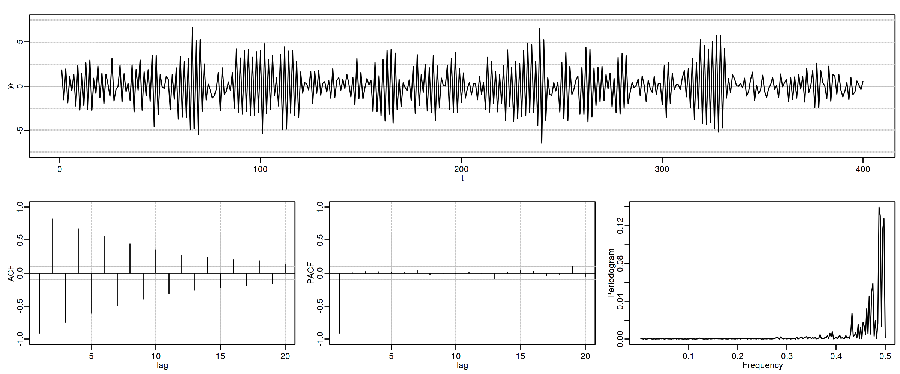
4.8. Proceso autorregresivo AR(\(2\))
Sea \(\quad(1-\phi_1 z-\phi_2 z^2)*\boldsymbol{X}=\boldsymbol{U},\quad\) con \(\;\boldsymbol{U}\sim WN(0,\sigma^2)\;\) y con \[\phi_1+\phi_2<1;\qquad \phi_2-\phi_1<1;\qquad |\phi_2|<1;\quad \text{(i.e., estacionario)}\] es decir \[X_t=\phi_1 X_{t-1} + \phi_2 X_{t-2} + U_t.\] Entonces
\(\boldsymbol{\gamma}=\sigma^2\left( \frac{1}{\boldsymbol{\phi}(z)}*\frac{1}{\boldsymbol{\phi}(z^-1)}\right)\qquad\)
\(\boldsymbol{\rho} \;=\; \frac{1}{\gamma_0}\boldsymbol{\gamma}\qquad\) (Verifica Ec. Yule-Walker: \(\;\rho_k=\phi_1\rho_{k-1}+\phi_2\rho_{k-2};\;\qquad\) decae)
\(f(\omega) \;=\; \frac{\sigma^2}{2\pi}\frac{1}{1+\phi_1^2+\phi_2^2-2\phi_1(1+\phi_2)\cos(\omega)-2\phi_2\cos(2\omega)}\)
\(\boldsymbol{\pi} \;=\; (\ldots,\; 0,\; \phi_2,\; \frac{\phi_1}{1-\phi_2},\; {\color{blue}1},\; \frac{\phi_1}{1-\phi_2},\; \phi_2,\; 0,\;\ldots)\)
4.8.1. AR(2) con \(\phi_1>0\) y \(\phi_2>0\)
options(repr.plot.width = 12, repr.plot.height = 2, repr.plot.res = 200) ar2phpp <- um(ar = "(1 -0.6B - 0.3B^2)") display(list(ar2phpp), lag.max = 20, byrow = TRUE) #, log.spec = TRUE
\[\boldsymbol{\phi}(z)=1-0.6z -0.3z^2\quad\Rightarrow\quad (1-0.6\mathsf{B}-0.3\mathsf{B}^2)X_t= U_t \qquad {\color{blue}{(\phi_1>0 \;\text{y}\; \phi_2>0)}}\]
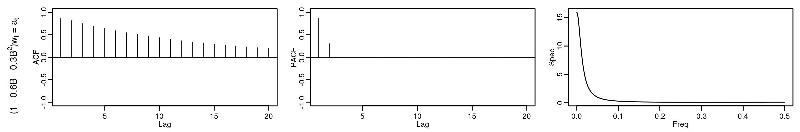
roots(ar2phpp)
Real Imaginary Modulus Frequency Period Mult. 1.081666 -8.077936e-28 1.081666 0.0 Inf 1 -3.081666 8.077936e-28 3.081666 0.5 2 1
options(repr.plot.width = 12, repr.plot.height = 5, repr.plot.res = 200) ide(sim(ar2phpp, n = 400), lag.max = 20, graphs = c("plot", "acf", "pacf", "pgram"))
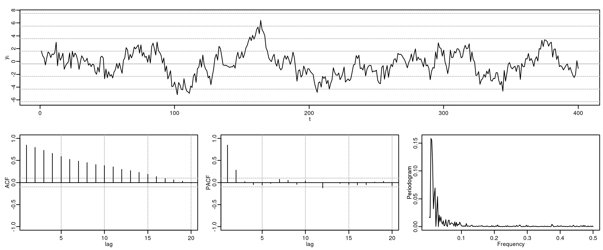
4.8.2. AR(2) con \(\phi_1<0\) y \(\phi_2<0\)
options(repr.plot.width = 12, repr.plot.height = 2, repr.plot.res = 200) ar2phnn <- um(ar = "(1 +0.9B + 0.9B^2)") display(list(ar2phnn), lag.max = 20, byrow = TRUE)
\[\boldsymbol{\phi}(z)=1+0.9z+0.9z^2\quad\Rightarrow\quad (1+0.9\mathsf{B}+0.9\mathsf{B}^2)X_t= U_t \qquad {\color{blue}{(\phi_1<0 \;\text{y}\; \phi_2<0)}}\]
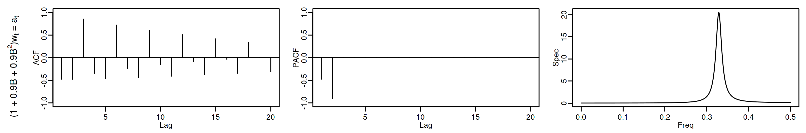
roots(ar2phnn)
Real Imaginary Modulus Frequency Period Mult. -0.5 0.9279607 1.054093 0.3286569 3.042687 1 -0.5 -0.9279607 1.054093 0.3286569 3.042687 1
options(repr.plot.width = 12, repr.plot.height = 5, repr.plot.res = 200) ide(sim(ar2phnn, n = 400), lag.max = 20, graphs = c("plot", "acf", "pacf", "pgram"))
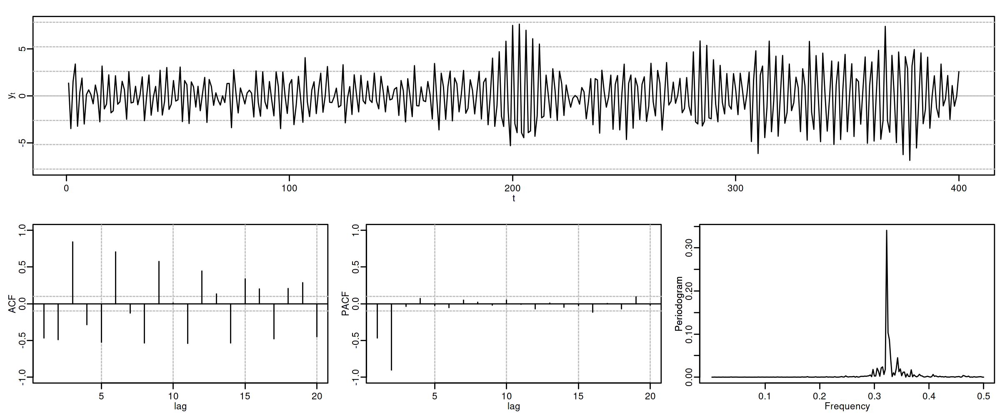
4.8.3. AR(2) con \(\phi_1>0\) y \(\phi_2<0\)
options(repr.plot.width = 12, repr.plot.height = 2, repr.plot.res = 200) ar2phpn <- um(ar = "(1 -1.1B + 0.9B^2)") display(list(ar2phpn), lag.max = 20, byrow = TRUE)
\[\boldsymbol{\phi}(z)=1-1.1z +0.9z^2\quad\Rightarrow\quad (1-1.1\mathsf{B}+0.9\mathsf{B}^2)X_t= U_t \qquad {\color{blue}{(\phi_1>0 \;\text{y}\; \phi_2<0)}}\]
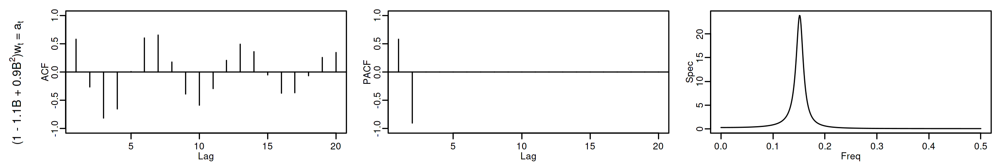
roots(ar2phpn)
Real Imaginary Modulus Frequency Period Mult. 0.6111111 0.858868 1.054093 0.1515749 6.597397 1 0.6111111 -0.858868 1.054093 0.1515749 6.597397 1
options(repr.plot.width = 12, repr.plot.height = 5, repr.plot.res = 200) ide(sim(ar2phpn, n = 400), lag.max = 20, graphs = c("plot", "acf", "pacf", "pgram"))

4.8.4. AR(2) con \(\phi_1<0\) y \(\phi_2>0\)
options(repr.plot.width = 12, repr.plot.height = 2, repr.plot.res = 200) ar2phnp <- um(ar = "(1 +0.6B - 0.3B^2)") display(list(ar2phnp), lag.max = 20, byrow = TRUE)
\[\boldsymbol{\phi}(z)=1+0.6z-0.3z^2\quad\Rightarrow\quad (1+0.6\mathsf{B}-0.3\mathsf{B}^2)X_t= U_t \qquad {\color{blue}{(\phi_1<0 \;\text{y}\; \phi_2>0)}}\]
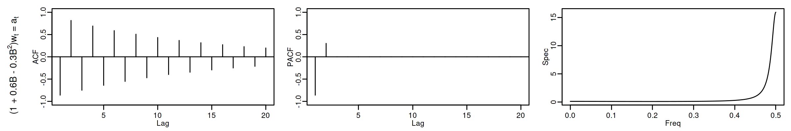
roots(ar2phnp)
Real Imaginary Modulus Frequency Period Mult. 3.081666 3.831501e-21 3.081666 0.0 Inf 1 -1.081666 -3.831501e-21 1.081666 0.5 2 1
options(repr.plot.width = 12, repr.plot.height = 5, repr.plot.res = 200) ide(sim(ar2phnp, n = 400), lag.max = 20, graphs = c("plot", "acf", "pacf", "pgram"))
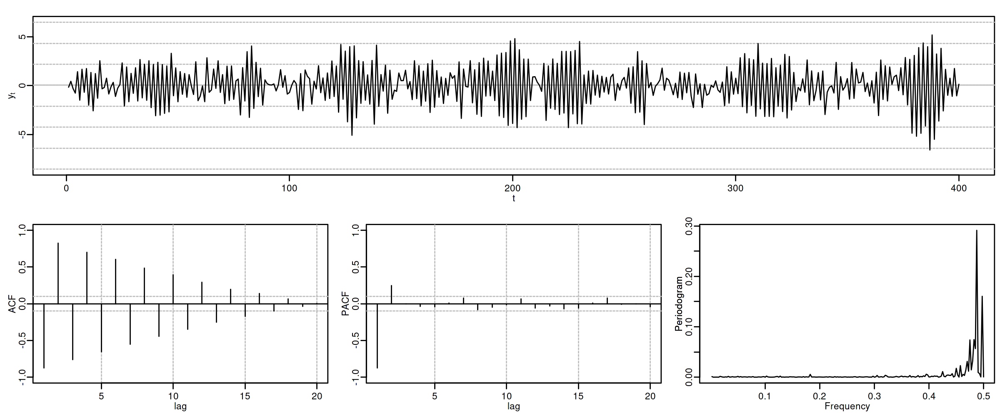
4.8.5. AR(2) con dos raíces reales, una positiva y la otra negativa
options(repr.plot.width = 12, repr.plot.height = 2, repr.plot.res = 200) ar2pn <- um(ar = "(1 + 0.1B - 0.8B^2)") display(list(ar2pn), lag.max = 20, byrow = TRUE)
\[\boldsymbol{\phi}(z)=1+0.1z-0.8z^2\quad\Rightarrow\quad (1+.1\mathsf{B}-.8\mathsf{B}^2)X_t = U_t \qquad {\color{blue}{(\text{raices reales: +, -})}}\]
roots(ar2pn)
Real Imaginary Modulus Frequency Period Mult. 1.18228 7.754818e-26 1.18228 0.0 Inf 1 -1.05728 -7.754818e-26 1.05728 0.5 2 1
options(repr.plot.width = 12, repr.plot.height = 5, repr.plot.res = 200) ide(sim(ar2pn, n = 400), lag.max = 20, graphs = c("plot", "acf", "pacf", "pgram"))
4.8.6. AR(2) con un par de raíces complejas
options(repr.plot.width = 12, repr.plot.height = 2, repr.plot.res = 200) ar2np <- um(ar = "(1 - 0.1B + 0.8B^2)") display(list(ar2np), lag.max = 20, byrow = TRUE)
\[\boldsymbol{\phi}(z)=1-0.1z+0.8z^2\quad\Rightarrow\quad (1-.1\mathsf{B}+.8\mathsf{B}^2)X_t = U_t \qquad {\color{blue}{(\text{par de r. complejas})}}\]

roots(ar2np)
Real Imaginary Modulus Frequency Period Mult. 0.0625 1.116286 1.118034 0.2410983 4.147685 1 0.0625 -1.116286 1.118034 0.2410983 4.147685 1
options(repr.plot.width = 12, repr.plot.height = 5, repr.plot.res = 200) ide(sim(ar2np, n = 400), lag.max = 20, graphs = c("plot", "acf", "pacf", "pgram"))
c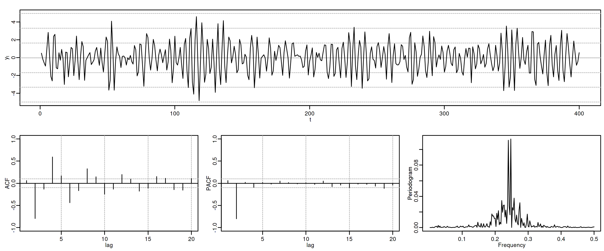
4.8.7. AR(2) con dos raíces reales y negativas
options(repr.plot.width = 12, repr.plot.height = 2, repr.plot.res = 200) ar2azul <- um(ar = "(1 + 1.6B + .64B^2 )") display(list(ar2azul), lag.max = 20, byrow = TRUE)
\[\boldsymbol{\phi}(z)=1+1.6z+0.64z^2\quad\Rightarrow\quad (1+1.6\mathsf{B}+.64\mathsf{B}^2)X_t = U_t \quad {\color{blue}{(\text{raices reales: -, -})}}\]

roots(ar2azul)
Real Imaginary Modulus Frequency Period Mult. -1.25 -1.110223e-16 1.25 0.5 2 2
options(repr.plot.width = 12, repr.plot.height = 5, repr.plot.res = 200) ide(sim(ar2azul, n = 400), lag.max = 20, graphs = c("plot", "acf", "pacf", "pgram"))
4.8.8. AR(2) con dos raíces reales y positivas
options(repr.plot.width = 12, repr.plot.height = 2, repr.plot.res = 200) ar2rojo <- um(ar = "(1 - 1.6B + .64B^2 )") display(list(ar2rojo), lag.max = 20, byrow = TRUE)
\[\boldsymbol{\phi}(z)=1-1.6z+.64z^2\quad\Rightarrow\quad (1-1.6\mathsf{B}+.64\mathsf{B}^2)X_t = U_t \quad {\color{blue}{(\text{raices reales: +, +})}}\]
roots(ar2rojo)
Real Imaginary Modulus Frequency Period Mult. 1.25 -2.775558e-16 1.25 0 Inf 2
options(repr.plot.width = 12, repr.plot.height = 5, repr.plot.res = 200) ide(sim(ar2rojo, n = 400), lag.max = 20, graphs = c("plot", "acf", "pacf", "pgram"))
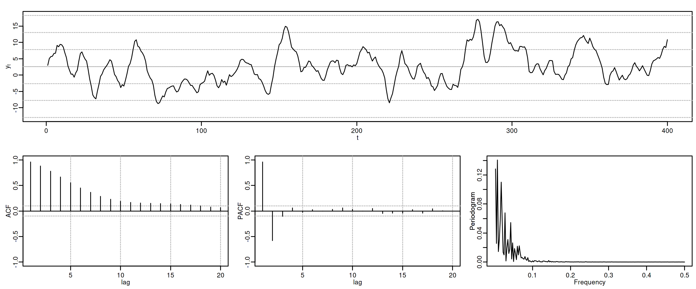
5. (Resumen) características de procesos MA(\(q\))
Siempre estacionario.
Para ser invertible raíces \(\boldsymbol{\theta}\) fuera del círculo unidad \((\boldsymbol{\theta}^{-\triangleright}=\boldsymbol{\theta}^{-1}\in\ell^1)\)
Tipos de representación del proceso
- Como suma ponderada finita
- (número finito de parámetros) \[\boldsymbol{X}=\boldsymbol{\theta}*\boldsymbol{U} \quad\Rightarrow\quad X_t=\boldsymbol{\theta}(\mathsf{B})U_t\]
- Como suma ponderada infinita
- (solo existe si es invertible): \[\frac{1}{\boldsymbol{\theta}}*\boldsymbol{X}=\boldsymbol{U} \quad\Rightarrow\quad \frac{1}{\boldsymbol{\theta}}(\mathsf{B})X_t=U_t\]
ACF (\(\boldsymbol{\rho}\)): Grado (\(q\)) y cogrado (\(-q\))
PACF (\(\boldsymbol{\pi}\)): Grado (\(\infty\)) y cogrado (\(-\infty\)): exponenciales y/o sinusoidales amortiguadas.
Densidad espectral proporcional al inverso de la densidad espectral de \(\;\boldsymbol{\theta}*\boldsymbol{X}=\boldsymbol{U}\)
6. (Resumen) características de procesos AR(\(p\))
Siempre invertible.
Para ser estacionario raíces de \(\boldsymbol{\phi}\) fuera del círculo unidad \((\boldsymbol{\phi}^{-\triangleright}=\boldsymbol{\phi}^{-1}\in\ell^1)\)
Tipos de representación del proceso
- Como suma ponderada finita
- (número finito de parámetros) \[\boldsymbol{\phi}*\boldsymbol{X}=\boldsymbol{U} \quad\Rightarrow\quad \boldsymbol{\phi}(\mathsf{B})X_t=U_t\]
- Como suma ponderada infinita
- (solo si es estacionario) \[\boldsymbol{X}=\frac{1}{\boldsymbol{\phi}}*\boldsymbol{U} \quad\Rightarrow\quad X_t=\frac{1}{\boldsymbol{\phi}}(\mathsf{B})U_t\]
ACF (\(\boldsymbol{\rho}\)): Grado (\(\infty\)) y cogrado (\(-\infty\)): exponenciales y/o sinusoidales amortiguadas.
PACF (\(\boldsymbol{\pi}\)): Grado (\(p\)) y cogrado (\(-p\))
Densidad espectral proporcional al inverso de la densidad espectral de \(\boldsymbol{X}=\boldsymbol{\phi}*\boldsymbol{U}\)
7. Nota final
Se puede demostrar que
- si un proceso tiene una ACF \(\boldsymbol{\rho}\) con cogrado \(-q\) y grado \(q\), es un proceso MA(\(q\))
- si un proceso tiene una PACF \(\boldsymbol{\pi}\) con cogrado \(-p\) y grado \(p\), es un proceso AR(\(p\))
Véase Pourahmadi M. (2001).
Consecuentemente, que la ACF o la PACF se corten ``bruscamente'' nos indica que el modelo es AR o MA (además de su grado).
Desgraciadamente para los modelos ARMA (qué veremos más adelante) tanto la ACF como la PACF tienen infinitos términos no nulos, por lo que su identificación no es tan sencilla.